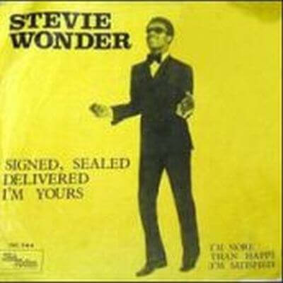

Video

"Signed, Sealed, Delivered I'm Yours" permanece número 1 de las listas Estadounidenses de R&B durante 6 semanas, y se situó en el 3 de las listas pop. A sus 20 años es la primera vez que publica un single siendo él mismo el productor. También es la primera vez que presenta un grupo femenino de voces, compuesto por Lynda Tucker Laurence (quien más tarde formó parte del grupo The Supremes), Syreeta Wright (co-autora de la canción), y Venetta Fields. Supuso también la primera nominación a los Grammy de stevie Wonder, y es una canción emblemática para Stevie.
En la biografía de su madre, Lula Mae Hardaway, contaba como estando su hijo Stevie al piano, un trozo de melodía, un trozo de letra, una y otra vez: "Here I am baby. . . . Here I am baby." y de ella surgió ese "Signed, sealed, and delivered. I'm yours." (Firmado, sellado, y entregado, soy tuyo). En una sóla frase resumía la existencia de toda una vida, la de una madre dispuesta a dar su vida por él. Ha sido la inspiración y la mecha que ha empujado a realizar la pasada gira mundial de Stevie Wonder, cumpliendo el deseo de su madre para que Stevie estuviera de nuevo en contacto con sus fans y pudiera expresar en vivo esa entrega incondicional con todos aquellos que disfrutamos con la música de este hombre.
La canción adquirió un significado político relevante al ser utilizada en la campaña presidencial de Barack Obama, y han sido muchas las versiones realizadas de la canción, de las que destacan la versión del grupo Blue, con las voces de Angie Stone y del mismo Stevie.

Letra
Like a fool I went and stayed too long
Now I'm wondering if your love's still strong
Oo baby, here I am, signed, sealed delivered, I'm yours
Como un tonto, me fui y permanecí así demasiado tiempo
Ahora me pregunto si tu amor sigue siendo fuerte
Oh, nena, aquí estoy: firmado, sellado, entregado, soy tuyo.
Then that time I went and said goodbye
Now I'm back and not ashamed to cry
Oo baby, here I am, signed, sealed delivered, I'm yours
Aquella vez me fui y te dije adiós
Ahora estoy de regreso y no estoy avergonzado de llorar
Oh, nena, aquí estoy: firmado, sellado, entregado, soy tuyo.
Here I am baby
Oh, you've got the future in your hand
(signed, sealed delivered, I'm yours)
Here I am baby,
oh, you've got the future in your hand
(signed, sealed, delivered, I'm yours)
Aquí estoy, cariño,
Tienes el futuro en tus manos
Firmado, sellado, entregado, soy tuyo
Aquí estoy, cariño,
Tienes el futuro en tus manos
Firmado, sellado, entregado, soy tuyo.
I've done alot of foolish things
that I really didn't mean
Hey, hey, yea, yea, didn't I, oh baby
He hecho un montón de tonterías
que realmente no eran mi intención
Hey, hey, sí, sí, sí, yo no, oh baby
Seen alot of things in this old world
When I touched them they did nothing, girl
Oo baby, here I am, signed, sealed delivered, I'm yours, oh I'm yours
He visto muchas cosas en este mundo antiguo
Cuando las toqué no hicieron nada
Oh nena, aquí estoy: firmado, sellado, entregado, soy tuyo, soy tuyo.
Oo-wee babe you set my soul on fire
That's why I know you are my only desire
Oo baby, here I am, signed, sealed delivered, I'm yours
Oh, prendes mi alma en llamas
Es por eso desde que te conozco tú eres mi único deseo
Oh, nena, aquí estoy: firmado, sellado, entregado, soy tuyo.
Here I am baby
Oh, you've got the future in your hand
(signed, sealed delivered, I'm yours)
Here I am baby,
oh, you've got the future in your hand
(signed, sealed, delivered, I'm yours)
I've done alot of foolish things
that I really didn't mean
I could be a broken man but here I am
With your future, got your future babe (here I am baby)
Here I am baby (signed, sealed delivered, I'm yours)
Here I am baby, (here I am baby)
Here I am baby (signed, sealed delivered, I'm yours)
Here I am baby, (here I am baby)
Here I am baby (signed, sealed delivered, I'm yours)
Aquí estoy, cariño
Firmado, sellado, entregado,
Tienes mi futuro en tus manos,
Aquí estoy, cariño,
Firmado, sellado, entregado
Tienes mi futuro en tus manos
He hecho muchas tonterías
Que no quería hacer
Podría ser un hombre roto, pero aquí estoy
Aquí estoy, cariño, firmado, sellado y entregado, soy tuyo.
Aquí estoy, nena, firmado, sellado, entregado, soy tuyo.